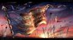
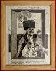
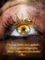
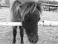

Még december elején hirdettem
meg a
Magyar mûvészek a magyarságért elnevezésû
kezdeményezést. Ennek keretében küldhetett bárki különféle saját készítésû
képeket nekünk, hogy aztán azokat mi kinyomtassuk, bekeretezzük, és
majd eladjuk, a befolyó összeget jótékony célra fordítva.
Bár úgy
terveztem (és azt is ígértem) karácsonyra el is jut majd a pénz azokhoz
akikhez szeretnénk, látnom kellett volna, hogy ez teljességgel
lehetetlen. Hiába a sok segítõ, kik nélkül sokkal nehezebb dolgom lett volna,
így sem tudtuk karácsonyra összehozni a jótékonysági képvásárt. Most
azonban végre minden készen áll ahhoz hogy megtartsuk.
Hogy
miért késett ennyit, mi mennyibe került (pontosan!), és hogy mennyi
pénz jut a befolyó összegbõl jótékony célra, illetve mennyit lopunk el mi
(semennyit) arról amint lezajlott a képvásár részletes beszámolót
írok.
A képvásár a következõképpen mûködik. Itt felsoroljuk az
összes beérkezett mûvet, kaptok mindrõl képet. A képeket pedig Tomcat
boltjában
(Oktogonnál Teréz körút 6.)
vehetitek meg. A pénzt egy külön perselybe gyûjtjük, és ha lezajlott a
képvásár (azaz elfogyott minden kép, ami remélem minél hamarabb bekövetkezik)
mint már említettem, mindenrõl pontosan beszámolok
majd.
Mielõtt belekezdenék a képek sorolásába, szeretnék
köszönetet mondani pár embernek, akik nélkül ha nem is képtelenség, de jóval
nehezebb és költségesebb lett volna összehozni ezt a jótékonysági
képvásárt.
Köszönet:
lacko333-nak, aki teljesen ingyen lenagyította a képvásárra
szánt összes 18x24-es méretû képet.
Kele Józsefnek aki segített olcsón, jó minõségû képkeretekhez
jutni, és segített a házhozszállítást is megoldani.
Tóth Gábornak a
decorus.hu tulajdonosának, akitõl kedvezményesen
tudtuk megvásárolni a 25 képkeretet.
Az
ismeretlen kamionosnak, aki házhoz szállította a
képeket.
És hogy mire költjük majd az elõreláthatólag bejövõ 50-60ezer
forintot? Nos, mivel semmi jó ötletünk nincs (a gázai akcióra nem
költhetjük, ugyanis megígértem, hogy a pénzzel magyarokat segítünk majd) így
tõletek várunk pár JÓ ötletet kommentben, hogy hol lenne igazán jó
helye annak a pénznek. Aztán a legjobb ötletek közül megszavazzuk,
hogy hova adjuk a pénzt. Arra viszont mindenkit kérek, hogy különféle
szervezeteket és alapítványokat ne dobjanak fel ötletként, mert azok
általában az adományok igen jelentõs részét lenyúlják, mi pedig
szeretnénk ha a teljes összeg valóban jótékony célra fordulna.
A képek
árait én szabtam meg, afféle 'ennyit igazán megér' alapon. Mivel
azonban jótékonyságról van szó, egy adott képért ennél többet is lehet
fizetni. Aki most felhúzza az orrát, annak ismét elmondanám, ez nem
biznisz, a pénz az utolsó fillérig jótékony célra megy majd.
*
Pápay Balázs - Háború. 12.000 Ft-ért
ELKELT (most már tényleg)
Ez a nagyszerû kép Pápay Balázs grafikusmûvész munkája,
melyet a többitõl eltérõen 60x50 centiméteres méretben nagyítottunk le. A képet egy
100x70cm-es keretbe raktuk. Így néz ki:

Jánváry Zoltán - The Ancestral Path II. Kézzel készült, teljesen egyedi metszet. Ára 10.000Ft
(Ezen a képen látszik egyébként hogy
milyenek a keretek.)
A további
képek mindegyike 18x24cm-es méretû, és
3000
Forintos alapáron vásárolható meg. Természetesen mindegy kép jó
minõségû fotópapírra készült, továbbá szintén kiváló minõségû keretben van. (
Akasztót ne felejtsetek el kérni a
boltban!)
Asztalos Máté - Turul
Bajkó Norbert - Hitvallás ELKELT
IronSquid - Bánat
Bocskay Gábor - Balatoni szél
Bocskay Gábor - Ima
Bocskay Gábor - KeresztBocskay Gábor - MásodosztályBocskay Gábor - Nyugalom 10.000
Ft-ért ELKELTBocskay Gábor - Sirály ELKELTBocskay Gábor - Sírkõ -
ELADVA!Crowley - A magyar tengerCrowley - Bütykös hattyúCrowley - GyertyalángIronSquid - TúlélõMarcu Andrei Daniel - A fény rejtekeMarcu Andrei Daniel - EgyedülMarcu Andrei Daniel - NapMarcu Andrei Daniel - Õszí
Marcu Andrei Daniel - SzínházPuskás Ivett - Ima a hazáértSzabó Gábor - ÍjászokSzabó Gábor - Fiatalok KurultajonVogl Gergõ - Cím
nélkülElõre is köszönöm mindazoknak akik vásárolnak képet, azoknak a nevében
is, akiket majd megsegítenek az adományukkal. Köszönöm továbbá az
alkotóknak, hogy ilyen nemes célra ajánlották fel mûveiket. A képeket
Tomcat polóboltjában lehet megvásárolni, minden hétköznap 12 és 18 óra
között. Vegyétek, vigyétek, ha már ennyi munkánk volt benne, ne legyen
eredménytelen ez a jótékonysági képvásár.
[Kérem a supervisorokat hogy dátumozzák újra egy
pár napig ezt a bejegyzést, hogy biztosan mindenki tudjon róla, és sikerrel
zárulhasson a dolog. Köszönöm.]